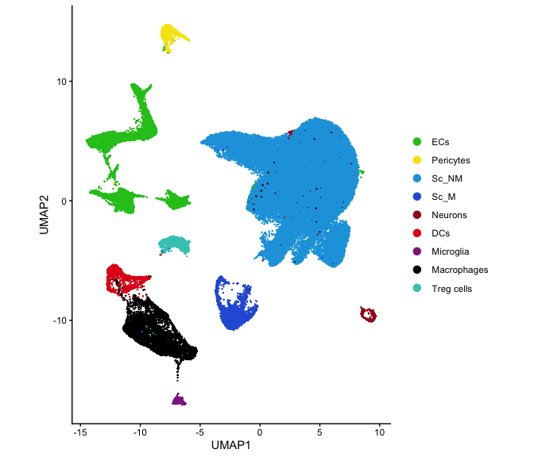
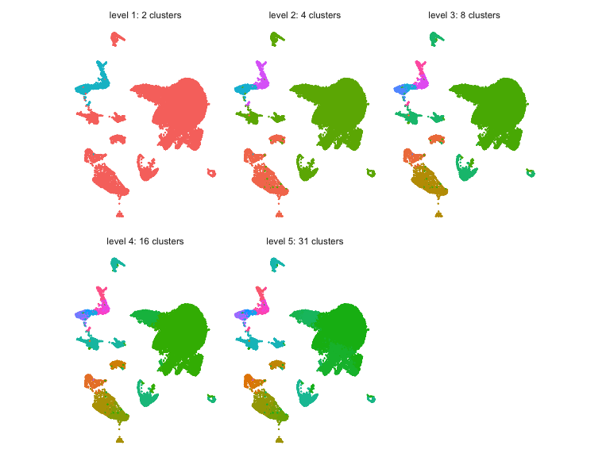
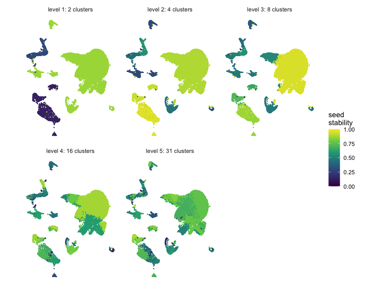
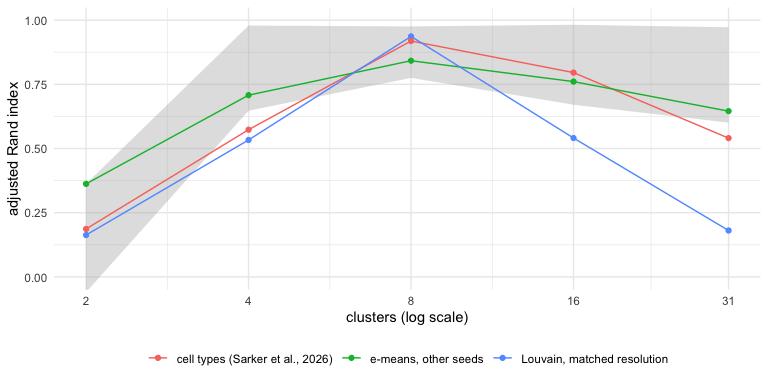
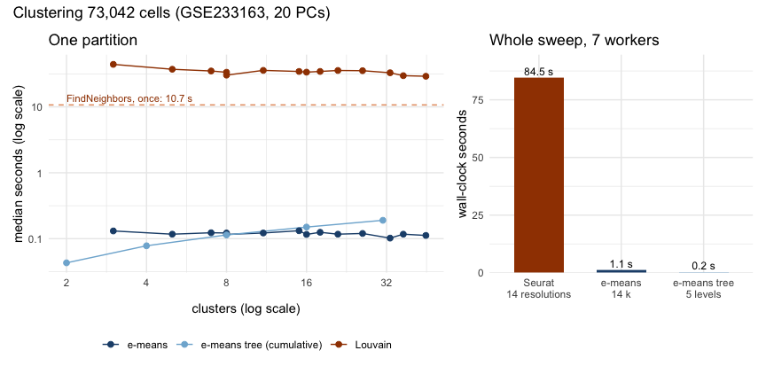

In most single-cell datasets there is no right number of clusters, so
the analysis looks for several resolutions and keep the ones that hold
up, in data and biology. This article builds that view with
emeans(): it splits the cells in two, splits each half in
two again, and so on, which gives a dendrogram whose depths are
increasing resolutions. Reruns with other seeds show which branches are
stable, and Seurat’s Louvain clustering at matching cluster counts
serves as an outside reference.
The data are GEO series GSE233163: about 73,000 mouse cells from two tissues, at baseline and under obesity (Sarker et al., 2026). The authors distribute a Seurat object and a separate cell metadata table with their cell-type labels. Neither file ships with the package, and building the site does not re-run this article.
library(emeansR)
library(Seurat)
library(mclust)
library(dplyr)
library(tidyr)
library(purrr)
library(tibble)
library(ggplot2)
library(patchwork)
library(tidygraph)
library(ggraph)Setup
- Machine: Apple M2, 8 physical cores; R version 4.6.1 (2026-06-24).
- Packages: emeansR 0.1.0, Seurat 6.0.0.
-
emeans()runs on 7 threads.
A separate script ran the slow steps (embedding, trees, reruns, stability, Louvain) once and saved every result to disk. The chunks below show the code, and the article reads the saved results.
Extract the GEO file once, then readRDS() reads it. The
object (Seurat 3.1 format, 8.7 GB in memory) has the authors’ integrated
expression but not their PCA or UMAP. The code below keeps only the
integrated assay: 3,000 genes, 2,000 of them the variable features used
for integration.
system("gunzip -k .dev/data/GSE233163_seurat_object.rds.gz")
full <- readRDS(".dev/data/GSE233163_seurat_object.rds")
integrated <- full@assays$integrated
obj <- CreateSeuratObject(CreateAssay5Object(data = integrated@data), assay = "integrated")
VariableFeatures(obj) <- integrated@var.features
rm(full, integrated)
invisible(gc())PCA and UMAP use the settings recorded in the object’s command log:
30 components, then UMAP on the first 20 with cosine distance, 30
neighbours and min.dist = 0.3. Clustering runs on the same
20 components.
embedding <- local({
obj <- ScaleData(obj, verbose = FALSE)
obj <- RunPCA(obj, npcs = 30, seed.use = 12345, verbose = FALSE)
obj <- RunUMAP(obj, dims = 1:20, n.neighbors = 30, metric = "cosine", min.dist = 0.3,
seed.use = 12345, verbose = FALSE)
list(pcs = Embeddings(obj, "pca")[, 1:20], umap = Embeddings(obj, "umap"))
})
rm(obj)
pcs <- embedding$pcs
umap <- embedding$umap
dim(pcs)
#> [1] 73042 20
meta <- read.csv(".dev/data/GSE233163_cells_metadata.csv.gz")
cell_type <- meta$cell_type[match(rownames(pcs), meta$id)]The metadata has 12 cell-type labels. The article groups them into the 9 cell types of Sarker et al. (2026), Fig. 1b, and uses that figure’s colours.
cell_group_map <- c(
endothelial_1 = "ECs", endothelial_2 = "ECs", endothelial_3 = "ECs",
pericyte = "Pericytes",
schwann_cell_1 = "Sc_NM", schwann_cell_2 = "Sc_NM",
schwann_cell_myelinating = "Sc_M",
neuron = "Neurons",
dendritic = "DCs",
microglia_1 = "Microglia",
macrophage = "Macrophages",
t_reg_lymphocyte = "Treg cells"
)
cell_group_colours <- c(
ECs = "#22C41E", Pericytes = "#F5E50A", Sc_NM = "#1AA3E0", Sc_M = "#2B5FD9", Neurons = "#A3171D",
DCs = "#E3191C", Microglia = "#8E2A8E", Macrophages = "#000000", `Treg cells` = "#3CC9C0"
)
cell_group <- factor(cell_group_map[cell_type], levels = names(cell_group_colours))
table(cell_group, useNA = "ifany")
#> cell_group
#> ECs Pericytes Sc_NM Sc_M Neurons DCs
#> 7731 1501 50080 3991 406 1707
#> Microglia Macrophages Treg cells
#> 470 5886 1270Recursive bisection
Each level of the tree refines the one above it, so the resolutions
nest: every cluster at level 4 lies inside one cluster at level 3.
Louvain at separate resolutions gives no such guarantee. Each split asks
emeans() for two clusters, so nobody has to pick a global
number of clusters in advance. The fits are small
(nepochs = 3), which keeps a whole tree cheap, and every
node gets its own seed, so the same seed always gives the same tree.
bisect_tree() keeps one label per cell and depth. At
each depth, emeans() splits every node with at least
min_cells cells in two, using only that node’s cells;
smaller nodes keep their label. A label is the path from the root, so
"1.2.1" is the first child of the second child of the
root.
bisect_tree <- function(x, max_depth = 5, min_cells = 200, seed = 1) {
labels <- matrix("1", nrow(x), max_depth + 1, dimnames = list(NULL, paste0("level_", 0:max_depth)))
for (depth in seq_len(max_depth)) {
parent <- labels[, depth]
child <- parent
nodes <- unique(parent)
for (i in seq_along(nodes)) {
idx <- which(parent == nodes[i])
if (length(idx) < min_cells) next
fit <- emeans(x[idx, , drop = FALSE], 2, nepochs = 3, seed = seed * 1000 + depth * 100 + i)
child[idx] <- paste0(nodes[i], ".", fit$cluster)
}
labels[, depth + 1] <- child
}
labels
}
max_depth <- 5
tree_time <- system.time(tree <- bisect_tree(pcs, max_depth))[["elapsed"]]
levels <- 1:max_depth
n_clusters <- map_int(levels, ~ n_distinct(tree[, .x + 1]))
tibble(level = levels, clusters = n_clusters)
#> # A tibble: 5 × 2
#> level clusters
#> <int> <int>
#> 1 1 2
#> 2 2 4
#> 3 3 8
#> 4 4 16
#> 5 5 31Stability across seeds
The tree is rebuilt with ten more seeds. Cluster names are arbitrary, so the comparison uses measures that ignore labels: the adjusted Rand index (ARI) per level, and for each cell the Jaccard overlap between its cluster in the reference tree and its cluster in the rerun.
reruns <- map(2:11, ~ bisect_tree(pcs, max_depth, seed = .x))
cell_jaccard <- function(a, b) {
tab <- table(a, b)
jac <- tab / (outer(rowSums(tab), colSums(tab), "+") - tab)
jac[cbind(match(a, rownames(tab)), match(b, colnames(tab)))]
}
seed_ari <- map_dfr(seq_along(reruns), function(r) {
tibble(run = r, level = levels,
ari = map_dbl(levels, ~ adjustedRandIndex(tree[, .x + 1], reruns[[r]][, .x + 1])))
})
stability <- map(levels, function(l) {
rowMeans(sapply(reruns, function(run) cell_jaccard(tree[, l + 1], run[, l + 1])))
})Louvain at matching resolutions
Seurat’s FindClusters() runs over a range of resolutions
on a shared nearest neighbour graph of the same 20 components
(k.param = 20, as the authors used). Each tree level is
paired with the resolution whose cluster count is closest to its
own.
resolutions <- c(0.001, 0.002, 0.005, 0.01, 0.02, 0.05, 0.1, 0.2, 0.3, 0.5, 0.75, 1, 1.5, 2)
louvain_time <- system.time({
graphs <- FindNeighbors(pcs, k.param = 20, verbose = FALSE)
louvain <- FindClusters(graphs$snn, resolution = resolutions, verbose = FALSE)
})[["elapsed"]]
louvain_k <- map_int(louvain, n_distinct)
match_res <- map_int(n_clusters, ~ which.min(abs(louvain_k - .x)))
agreement <- tibble(
level = levels,
clusters = n_clusters,
resolution = resolutions[match_res],
louvain_clusters = louvain_k[match_res],
ari_louvain = map2_dbl(levels, match_res, ~ adjustedRandIndex(tree[, .x + 1], louvain[[.y]])),
ari_cell_group = map_dbl(levels, ~ adjustedRandIndex(tree[, .x + 1], cell_group))
)The saved agreement table scores the tree against the 12 metadata labels, so the chunk below recomputes the ARI against the 9 cell types.
agreement <- read_result("agreement") |>
select(-ari_cell_type) |>
mutate(ari_cell_group = map_dbl(levels, ~ adjustedRandIndex(tree[, .x + 1], cell_group)))
agreement
#> # A tibble: 5 × 6
#> level clusters resolution louvain_clusters ari_louvain ari_cell_group
#> <int> <int> <dbl> <int> <dbl> <dbl>
#> 1 1 2 0.001 3 0.163 0.187
#> 2 2 4 0.001 3 0.533 0.573
#> 3 3 8 0.01 8 0.937 0.919
#> 4 4 16 0.2 16 0.541 0.796
#> 5 5 31 1 33 0.181 0.540Louvain returns at least 3 clusters even at resolution 0.001, so levels 1 and 2 are compared with that coarsest Louvain partition.
The tree
Node size is the number of cells; colour is the mean seed stability of the node’s cells at its depth. Leaf labels give the most common cell type among the leaf’s cells.
node_stability <- map_dfr(levels, function(l) {
tibble(name = tree[, l + 1], stability = stability[[l]]) |>
group_by(name) |>
summarise(stability = mean(stability), .groups = "drop") |>
mutate(depth = l)
})
# A node that stops splitting keeps its name at deeper levels; keep its first depth.
nodes <- map_dfr(0:max_depth, ~ count(tibble(name = tree[, .x + 1]), name, name = "cells") |> mutate(depth = .x)) |>
group_by(name) |>
slice_min(depth) |>
ungroup() |>
left_join(node_stability, by = c("name", "depth"))
edges <- nodes |>
filter(depth > 0) |>
transmute(from = sub("\\.[^.]+$", "", name), to = name)
# The last tree column holds each cell's leaf, also for nodes that stopped splitting early.
leaf_group <- tibble(name = tree[, max_depth + 1], cell_group = cell_group) |>
count(name, cell_group) |>
group_by(name) |>
slice_max(n, n = 1, with_ties = FALSE) |>
ungroup() |>
transmute(name, cell_group = as.character(cell_group),
label_colour = cell_group_colours[cell_group])
graph <- tbl_graph(nodes = left_join(nodes, leaf_group, by = "name"), edges = edges) |>
mutate(leaf = node_is_leaf())
ggraph(graph, layout = "dendrogram", height = -depth) +
geom_edge_elbow(colour = "grey60") +
geom_node_point(aes(size = cells, colour = stability)) +
geom_node_text(aes(label = cell_group, colour = I(label_colour), filter = leaf),
angle = 90, hjust = 1, nudge_y = -0.2, size = 2.8, fontface = "bold") +
scale_colour_viridis_c(limits = c(0, 1), na.value = "grey40") +
scale_size_area(max_size = 8) +
expand_limits(y = -max_depth - 1.3) +
labs(colour = "seed\nstability", size = "cells") +
theme_void()![Recursive e-means tree of 73,042 cells, 5 levels deep, with 31 leaves. Each point is a cluster, drawn at the depth where it first appears, and its size is the number of cells. Colour is seed stability: for each cell, the Jaccard overlap between its cluster and its cluster in a rerun, averaged over 10 reruns with other seeds and then over the node’s cells (1 means the same cluster every time; the root has no value and is grey). Leaf labels and their colours give the most common cell type (Sarker et al., 2026).](single-cell-figs/dendrogram-1.png)
Clusters on the UMAP
All cells, coloured by cell type as in Sarker et al. (2026), Fig. 1b. This article recomputes the UMAP, so its layout differs from the published one.
tibble(umap_1 = umap[, 1], umap_2 = umap[, 2], cell_group = cell_group) |>
ggplot(aes(umap_1, umap_2, colour = cell_group)) +
geom_point(size = 0.1) +
scale_colour_manual(values = cell_group_colours) +
guides(colour = guide_legend(override.aes = list(size = 3))) +
coord_equal() +
labs(x = "UMAP1", y = "UMAP2", colour = NULL) +
theme_classic()
Below, each panel is one tree level and shows a random 20,000 cells.
set.seed(1)
show <- sample(nrow(umap), min(20000, nrow(umap)))
cells <- map_dfr(levels, function(l) {
tibble(umap_1 = umap[show, 1], umap_2 = umap[show, 2],
level = sprintf("level %d: %d clusters", l, n_clusters[l]),
cluster = tree[show, l + 1], stability = stability[[l]][show], cell_group = cell_group[show])
})
ggplot(cells, aes(umap_1, umap_2, colour = cluster)) +
geom_point(size = 0.1) +
facet_wrap(~level) +
guides(colour = "none") +
coord_equal() +
theme_minimal() +
theme(axis.text = element_blank(), axis.title = element_blank(), panel.grid = element_blank())
ggplot(cells, aes(umap_1, umap_2, colour = stability)) +
geom_point(size = 0.1) +
facet_wrap(~level) +
scale_colour_viridis_c(limits = c(0, 1)) +
coord_equal() +
labs(colour = "seed\nstability") +
theme_minimal() +
theme(axis.text = element_blank(), axis.title = element_blank(), panel.grid = element_blank())
Stability against resolution
seed_summary <- seed_ari |>
group_by(level) |>
summarise(median = median(ari), low = min(ari), high = max(ari), .groups = "drop")
bind_rows(
seed_summary |> transmute(level, ari = median, low, high, comparison = "e-means, other seeds"),
agreement |> transmute(level, ari = ari_louvain, comparison = "Louvain, matched resolution"),
agreement |> transmute(level, ari = ari_cell_group, comparison = "cell types (Sarker et al., 2026)")
) |>
left_join(tibble(level = levels, clusters = n_clusters), by = "level") |>
ggplot(aes(clusters, ari, colour = comparison)) +
geom_ribbon(aes(ymin = low, ymax = high, group = comparison), data = \(d) filter(d, !is.na(low)),
fill = "grey70", alpha = 0.4, colour = NA) +
geom_line() +
geom_point() +
scale_x_continuous(trans = "log2", breaks = n_clusters) +
coord_cartesian(ylim = c(0, 1)) +
labs(x = "clusters (log scale)", y = "adjusted Rand index", colour = NULL) +
theme_minimal() +
theme(legend.position = "bottom")
Time against Seurat
A separate timing script compares the two methods on the same 20
components with the same number of cores. Louvain needs the shared
nearest neighbour graph first, built once, and then runs each resolution
as one job. e-means gets one job per cluster count that Louvain
produced. Each forked worker takes one job on one core, and the script
repeats every step three times and reports medians. Tree levels depend
on each other, so the tree runs them in sequence and gives
emeans() all cores as threads.
snn <- FindNeighbors(pcs, k.param = 20, verbose = FALSE)$snn
louvain <- parallel::mclapply(resolutions, function(r) FindClusters(snn, resolution = r, verbose = FALSE),
mc.cores = workers)
k_values <- map_int(louvain, ~ n_distinct(.x[[1]]))
options(emeansR.threads = 1)
flat <- parallel::mclapply(k_values, function(k) emeans(pcs, k, nepochs = 3, seed = k), mc.cores = workers)
With 7 cores, the Seurat sweep (graph plus 14 resolutions) takes 84.5 seconds, 10.7 of them building the graph. e-means at the same 14 cluster counts takes 1.1 seconds, and the whole five-level tree 0.2 seconds.
References
Bessa S, Mazaré P-E, Szilvasy G, Touvron H, Picard D, Douze M, Jégou H (2026). e-means: outperforming k-means (in one-tenth the epochs). arXiv:2611.09501. https://arxiv.org/abs/2611.09501
Sarker G, Haberman E, Chandran A, Monfeuga T, Maroteau C, Lundh S, Oliveira DS, Raimondi A, Ziegler K, Gomes T, Cordeiro TN, Parekh K, Schmid E, Fernández-Sanmartín P, Griebel A, Martinez-Sanchez N, Arús BA, Cheung SW, Zhu Y, Shaked M, Knowles SCL, Engelhardt SH, Iannacone M, Scherer PE, López M, Toledo EM, Domingos AI (2026). The perineurium integrates leptin with its sympathetic outflow to protect against obesity. Nat Metab 8(7):1563-1582. https://doi.org/10.1038/s42255-026-01555-3. Erratum in: Nat Metab 8(9):2038. https://doi.org/10.1038/s42255-026-01605-w. PMID: 42443582; PMCID: PMC13400315.